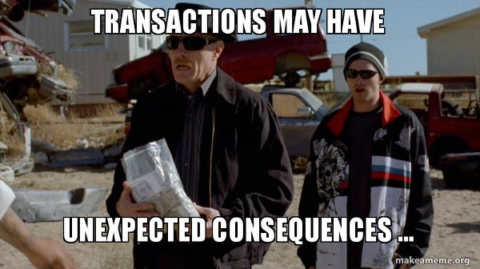
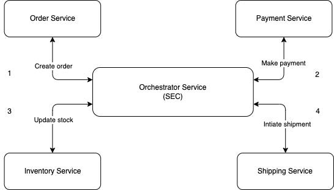
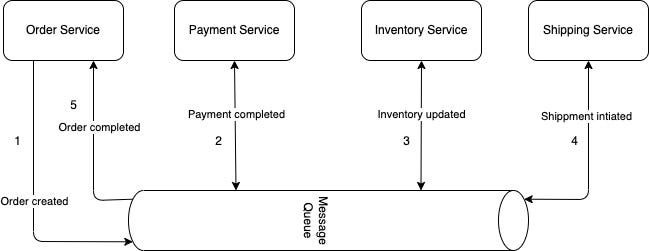
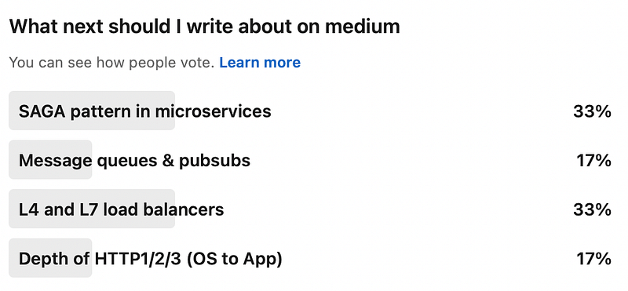
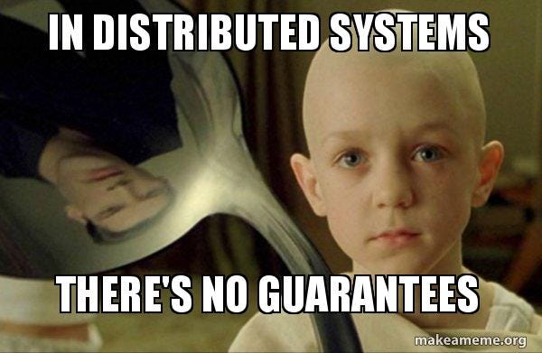

You must be aware about transactions in databases. Databases follow ACID properties to keep a transactions atomic, consistent, isolated and durable. But in a larger ecosystem, a workflow of a feature has a chain of such transactions which needs to happen on different microservices with their own separate database. One classic example can be a user registers on some finance app where request is handled by user service then request is given to identity service for KYC verification which later on goes to wallet service to create the wallet and chain goes on. Now this flow is actually a distributed transaction. System should be able to commit as well as rollback such a transaction (chain of requests).
What is the problem ?
Distributed enterprise software system with multiple microservices handles the request as a distributed transaction which does not follow ACID properties by default. If one stage fails to process the request, prior stages should rollback and if request succeeds then post stages should handle request in an order. Such distributed transactions should be atomic, consistent, isolated and durable. A mechanism is required to make these distributed transaction ACID compiant.

What is SAGA ?
Saga is a architecture pattern that lets us manage distributed transactions in a microservice architecture. It helps to keep these distributed transaction ACID compliant. Now SAGA can be implemented broadly in two ways
- Orchestration
- Choreography
Orchestration
As you can see in the diagram, system comprises of multiple service in which an orchestrator service is present. This orchestrator is responsible for managing the lifecycle of the distributed transaction which going through different microservices. If there is any failure reported by any microservice, orchestrator should signal a rollback to the previous services. Whereas if there is a success, orchestrator should invoke the next microservice in the flow of that transaction. Orchestrator service can be referred as SAGA execution coordinator (SEC).

By using orchestrator, you make the microservices more decoupled by concentrating the responsibility of orchestrating/managing the distributed transaction flow to orchestrator.
Advantages
- Microservices are decoupled by concentrating the responsibility of orchestrating the distributed transaction flow on orchestrator service
- Changes in stages of transaction will not require redeployment of any microservice
- Observability is higher compared to choreography because of single point of control
- Automated testing is easier compared to choreography
Disadvantages
- Orchestrator is a single point of failure (need to ensure very high availability)
- Complex to implement (frameworks like Apache Camel are available)
Choreography
Choreography as the name suggest is when each component (microservice here) in the system knows what action to perform on a particular trigger. This pattern does not require orchestrator where as the responsibility to perform action (or series of action) on a given signal is with individual microservice.

A message queue or any kind of event mechanism is used to shared the events generated from one microservice to all others. Depending on such events , different microservice can perform a commit or a rollback at individual level. Choreography is most widely used SAGA pattern.
Advantage
- No single point of failure as there is no need of orchestrator service
- Easier to implement as each microservice handles it own events (or triggers)
Disadvantage
- Automated testing and debugging is really difficult
- Observability is low compared to orchestration
Short note for you
I have written this story after getting the results from the poll done on my LinkedIn profile. Feel free to follow me on LinkedIn for suggestions
https://www.linkedin.com/in/dev-mohit-malhotra/

Conclusion
Handling of distributed transaction is core thing for enterprise level distributed software system as distributed architectures does not offer guarrantees.

“ Knowledge about available architectural patterns such as SAGA is critical while designing a distributed system as it helps you choose the best suited software architectural approach after considering the tradeoffs. “
Don’t forget to follow me on Medium for more such content and give a clap if you like it.